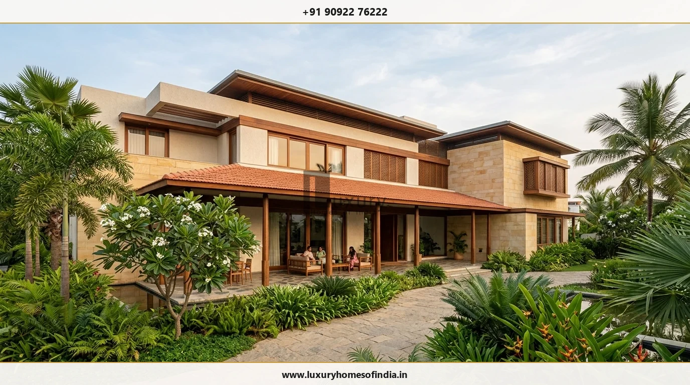
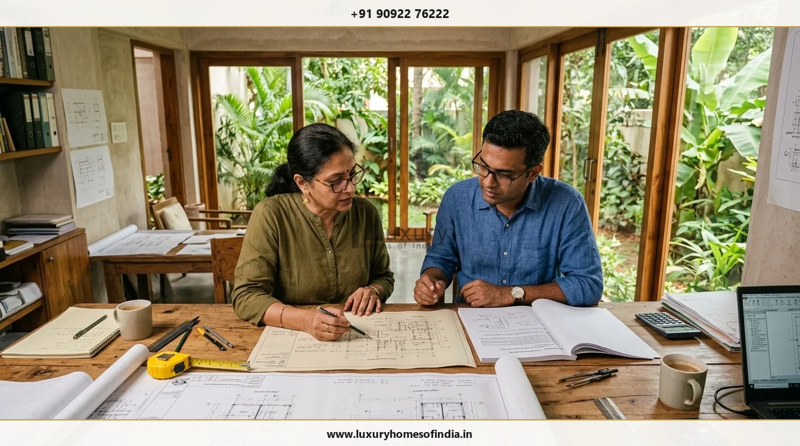
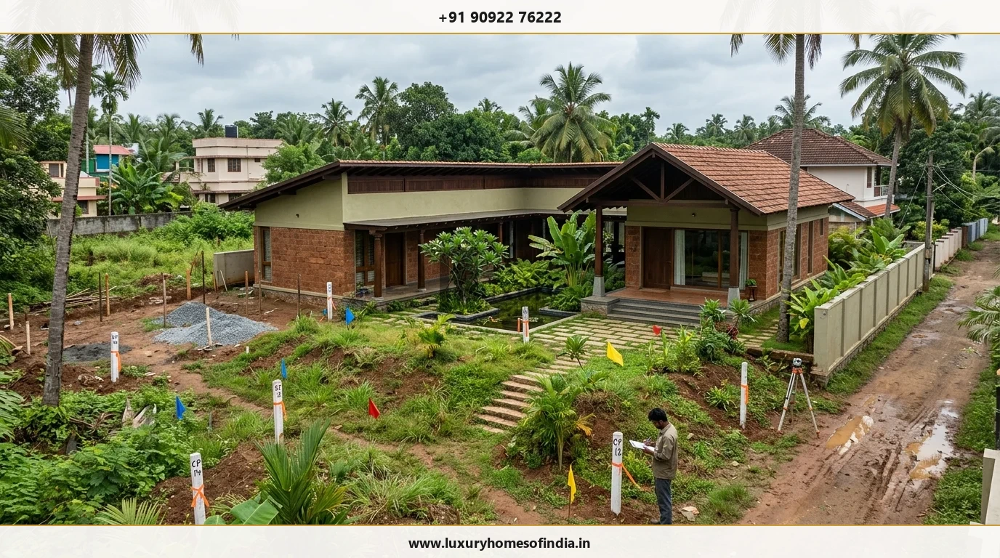

Keep your Chennai villa project structured—even when living overseas.
Planning a luxury villa in Chennai while residing abroad requires technical clarity, defined site responsibilities, transparent reporting and structured approval workflows. Overseas Indian homeowners face distinct coordination challenges: managing distance, navigating time zone differences, ensuring regulatory compliance, reviewing material specifications remotely, and managing multiple specialist design consultants.
Whether you own a plot in East Coast Road (ECR), Old Mahabalipuram Road (OMR), Anna Nagar, Boat Club, or emerging suburban locations, successful execution depends on establishing clear project protocols before physical site works commence.
At Luxury Homes of India, published Chennai project processes emphasize pre-construction coordination, structural check hold points, and structured material reviews. [REQUIRES VERIFIED LHI INPUT: Confirm specific NRI service package scope, dedicated single-point contact availability, remote client portal access, and handover documentation protocols.]

Establish project-specific responsibilities before work begins
A successful villa build relies on unambiguous division of roles across architectural design, structural engineering, statutory approvals, site management, procurement and quality control. When building from abroad, treating project management and site supervision as interchangeable roles can create accountability gaps.
Before appointing a project team or commencing site work, ensure that the following core responsibilities are explicitly assigned:
- Architectural & Planning Coordination: Who translates design intent into detailed execution drawings and coordinates local authority approvals (CMDA/GCC)?
- Structural Engineering Oversight: Who conducts ground investigation, calculates foundation loads, and performs critical rebar verification before concrete pours?
- Daily Site Management: Who manages daily labor, site logistics, safety protocols, and material receipts on-site in Chennai?
- Independent Technical Inspection: Who verifies that physical construction matches architectural specifications and engineering standards?
- Remote Decision Approval: Which decisions require your explicit written sign-off, and what is the agreed timeline for feedback?
Key considerations for overseas villa projects in Chennai
Managing a villa build from across time zones requires predictable, evidence-based project management. The four foundational pillars below help protect quality, timeline, and investment value:
1. Site & Soil Due Diligence
Conducting comprehensive soil testing (IS 1892 / IS 1904) to establish foundation parameters tailored to Chennai's varied coastal, clay, or rocky ground conditions.
2. Design & Approval Coordination
Aligning architectural, structural, and MEP drawings with local CMDA/GCC building rules prior to site mobilization.
3. Remote Material Approvals
Establishing digital sample reviews, physical sample boards, and factory inspection protocols for high-value finishes.
4. Structured Quality Audits
Implementing mandatory hold points for structural inspections before key milestones such as foundation casting or slab concreting.
Decision matrix for remote villa construction
To maintain momentum without compromising technical oversight, agree on a structured decision matrix detailing how each project stage is verified remotely:
| Project Stage | Remote Owner Focus | Local Site Requirement | Key Verification Document |
|---|---|---|---|
| Pre-Construction | Design brief & budget sign-off | Soil investigation & boundary survey | Geotechnical report & CMDA permit |
| Substructure | Foundation type approval | Excavation depth & rebar binding inspection | Structural engineer site sign-off |
| Superstructure | Floor plan modifications | Concrete cube testing & slab casting check | Third-party lab test certificates |
| Finishes & MEP | Material selections & fixture sign-off | Mock-up installation & pressure testing | High-resolution photo & video approval |
| Handover | Final walkthrough review & snagging | System commissioning & deep cleaning | As-built drawings & warranty dossier |

Material selections and specification approvals
Selecting materials from abroad requires a balance between digital visualization and physical sample verification. High-end villa projects in Chennai often feature specialized imported or natural materials such as Italian marble, custom teak joinery, high-performance acoustic fenestration, and home automation systems.
To ensure remote material approvals are foolproof:
- Physical Sample Couriers: Request physical sample boxes for key touchpoints (granite, marble, wood stains, tile samples) dispatched to your overseas address.
- Lighting & Context Testing: Verify stone and paint samples under natural sunlight matching South Indian directional exposure.
- Approved Mock-Ups: Require physical site mock-ups (such as a finished bathroom wall section or window frame assembly) photographed in high resolution before full ordering.
- Specification Schedules: Maintain a locked master specification document listing exact brand codes, model numbers, and finish grades.
Managing whole-property villa requirements
A luxury villa encompasses more than the main building enclosure. Landscaping, security perimeter, driveway paving, swimming pools, outdoor lighting, and utility infrastructure require equal coordination.

Key integrated infrastructure elements for Chennai residential properties include:
- Water Management Systems: Rainwater harvesting pits, groundwater recharge wells, reverse osmosis (RO) filtration, and dual plumbing lines compliant with local Chennai regulations.
- Power Backup & Solar Integration: Sizing grid-tied solar PV systems and automatic diesel generator or lithium battery storage tailored to heavy air-conditioning loads.
- Perimeter & Landscape Coherence: Designing compound walls, motorized entrance gates, security CCTV coverage, and indigenous South Indian flora that withstand coastal humidity.
Quality inspection and handover verification
Handover is the final milestone where theoretical design meets physical reality. A structured inspection process ensures that all architectural, structural, electrical, and plumbing elements are thoroughly tested before final sign-off.

Practical steps for remote handover verification include:
- Comprehensive Snagging List: Conducting a room-by-room digital inspection highlighting any surface defects, alignment issues, or paint touch-ups.
- Services Commissioning Test: Verifying water pressure, electrical load balancing, HVAC cooling performance, and drainage flow under full load conditions.
- Documentation Handover: Compiling as-built architectural plans, structural certificates, MEP schematic diagrams, equipment warranties, and statutory completion certificates into a digital dossier.
Frequently Asked Questions
Make your overseas villa project structured & transparent
Bring your site details, architectural ideas, and project expectations to an initial discussion.
Speak with Luxury Homes of India to structure site responsibilities, technical inspections, remote reporting, and handover standards for your Chennai villa.
Call: +91 90922 76222
Email: info@luxuryhomesofindia.in